TraGR：把语义码生成、概率反馈与后续信用统一到行为轨迹预测
《From Tokens to Behaviors: Rethinking Generative Recommendation for User Trajectory Prediction》研究的是：给定用户已发生的交互历史，一次预测未来若干次交互的物品及顺序。一作 Jiaqi Wang 署名同济大学和香港中文大学，共同一作 Hanchen Yang 来自快手，其他合作机构包括复旦大学。论文于 2026 年 11 月 12 日首次提交；本笔记核对版本为 v1。论文入口：arXiv:2611.16159。作者代码仓库已可访问，本次未训练或复现实验；仓库提供的读取已有指标路径也不能等同重新运行评测。
逐个生成语义码把物品内部的编码过程与行为之间的状态转移混在一起；只传递选中物品又会丢失其他可能行为的概率信息。训练时依赖真实历史、预测时依赖自己生成的历史，也使多步轨迹预测面临训练与推理不一致。
1. 背景和问题
1.1 未来轨迹和下一物品候选列表是不同任务
推荐模型通常根据用户历史给下一次交互排出多个候选。一个长度为五的候选列表，表达的是“下一次可能点击这五个物品中的某个”，位置更多反映模型认为的相关性顺序。用户行为轨迹预测则要求预测未来第一次、第二次、第三次等连续交互，输出位置具有时间含义。第二个预测物品应当接在第一个预测行为之后，而不是只是下一次点击的第二名候选。TraGR把这种任务称为UBTP，任务输入是已观察历史，输出是尚未观察到的后续交互序列。这个区别决定了不能直接把普通推荐模型的Top-K当作轨迹，也不能用一个无序目标集合替代有序未来。
以论文的运动用品例子说明，跑鞋、运动袜、水壶可以构成后续需求变化的序列。普通候选列表可能同时给出多个相近款式跑鞋，它们有助于预测下一次点击，却不一定表达购买跑鞋后再找袜子和水壶的行为发展。下一篮子预测关心购物事件里出现哪些商品，通常不要求商品之间的交互时间顺序；列表重排关心一次服务请求里如何摆放多个推荐结果，也不要求每一项都是用户未来一定会依次交互的物品。本文有意区分这些任务，因为它要让模型在尚未收到新真实交互时，继续预测未来多个位置。
对工程读者而言，这项任务有两层价值。第一层是观察模型是否学到了超越一次点击的时序依赖，而不是只抓到热门物品或邻近兴趣；第二层是利用未来监督改善中间状态的表示，使模型从多个后续位置获得训练信号。但论文所评估的是已有日志中的预测能力，不能据此断言推荐某件商品后用户会被引导去消费另一件。真实轨迹还受到价格、库存、活动、曝光策略和用户外部生活事件影响，离线预测这些记录与改变这些行为属于不同证据要求。TraGR没有提供线上反事实干预实验。
1.2 三个断点为什么会在长轨迹里叠加
生成式推荐用Semantic ID把一个物品表示为多个离散码，利用码的共享结构降低直接预测巨大物品词表的困难。传统自回归方案在物品内部依次产生多个码，再把后续物品的码接在后面。从纯文本生成视角，这是一条统一token序列；从用户行为视角，同一件物品的不同码并不是不同交互事件。如果一件物品需要十六个码，预测五次交互就可能把八十个token依赖串成一条长链，其中许多依赖只是完成当前物品编码，并没有推进用户状态。论文要将“组合一个物品”与“推移一次行为”分开处理。
第二个断点发生在预测结果被送到下一步时。选出概率最高的袜子之后，如果只反馈袜子的向量，下一状态便看不到跑鞋仍然获得很高支持。模型的分布也许表达了几种相互关联的未来需求，单一离散决策却把这些不确定性压成一个物品。越往后预测，前面决策失去的信息越多，错误也越可能沿着反馈链传播。因此，TraGR同时保留明确的选中物品锚点和概率加权的候选摘要。它并不是取消选择，更不是把所有候选均匀混合，而是在选定行为附近保留仍然合理的替代方向。
第三个断点是学习信号与实际运行路径不一致。Teacher forcing使用真实前缀预测后一个目标，训练时模型总能接触正确轨迹；实际预测只能沿着自己选出的物品继续走。即使下一步交叉熵足够小，模型也可能从未学过如何处理自己生成的偏离前缀。进一步说，一个中间物品不应只按是否命中当前目标评分，它还改变后续状态、影响之后的预测质量。论文因而引入在模型生成轨迹上学习的第二阶段，并让后续质量向较早的选择分配信用。
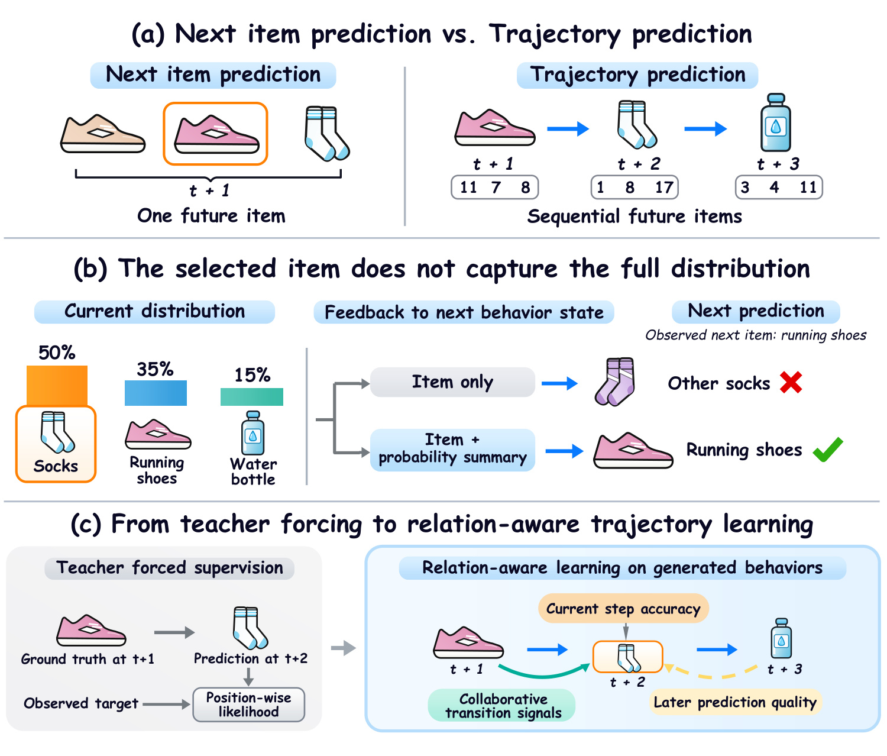
Figure 1把上述三个断点放在同一任务图里。上部的下一物品列表与轨迹序列虽然都包含多件商品，但右侧每件商品对应不同未来时间位置，因此不能互换评价。中部举出当前概率分布：袜子占50%、跑鞋35%、水壶15%；它并非本文真实测试样本的统计，而是说明只反馈袜子时丢掉了跑鞋的备选支持。保留概率摘要后，下一次预测才可能继续沿着跑鞋相关需求演化。图下部则比较真实前缀监督与生成行为上的关系学习，当前准确性、相邻转移以及之后的预测质量共同参与反馈。这是一张问题说明图，数字不应解释成算法提升。图中“跑鞋更合理”的例子也不构成每个用户都遵循固定购买顺序的假设；算法仍需从实际历史与训练转移统计中估计各自概率。
在训练目标上，轨迹还提出一个普通召回不突出的问题：多个未来位置的质量不能只算一次平均值。如果早期位置很准、末尾几乎无法预测，算术平均可能掩盖尾部失败；如果每一步都有一定覆盖，也不代表同一条测试轨迹的所有目标同时进入候选。论文同时报告算术均值、几何均值和逐样本联合覆盖，正是要避免这几种观察被混为一谈。这些指标仍以历史日志的未来物品为唯一相关项，同一位置的其他合理替代物品可能没有正标签，所以模型在语义上连贯和它在该协议下命中真实轨迹也应分别讨论。
既有方法提供了不同起点。RPG已经探索并行预测一个物品的SID，所以本文不能把物品内并行本身视为全新贡献；GCB把生成式推荐拓展到未来行为链，但串行SID与行为递进仍共用token顺序；LPDO借助扩散模型与列表偏好学习预测轨迹。TraGR的重点在于把并行SID头、每物品一次的循环状态、概率反馈以及后续信用联合成一套训练与推理闭环。验证这一组合需要多步监督基线、反馈设计消融和第二阶段目标消融，不能只靠对普通下一物品模型的优势来归因。
2. 方法
2.1 行为级生成与概率反馈
物品先由文本特征经过OPQ量化，得到固定的多位置SID。码分配在训练期间保持不变，但每个码位置的embedding表可学习。用户历史的每件物品先取码向量均值，再送入因果Transformer，只用历史最后位置输出初始化行为状态。原文公式(1)-(4)可以放在一个连续模块中理解：
符号解释：$i$为物品，$c_\ell(i)$为它在第$\ell$个码本中的索引，$L$为SID长度，$E$为可学习码向量，$h_t$为第$t$个未来位置的状态，$f_\ell$为该码位置独立的残差MLP，$q_{t,\ell}$为码概率，$\tau_{\mathrm{sid}}$为温度。所有码头接收同一个状态并行计算，在不同未来步之间复用参数。并行化发生在同一物品的码位置，未来物品之间仍按状态递推顺序运行。
模型接着把每个合法物品对应码的对数概率平均，归一化成整个物品库上的分布。这里的物品库是评价协议允许的目录，而不是每个码位置的笛卡尔积。多个码头并行预测后，组合分数仍需依据目录中每件物品的固定SID查表；因此非法码串不会直接作为新物品输出。这个转换也提供一个可微的物品级接口，让后续准确性奖励和软反馈直接作用在真实物品分布上。原文公式(5)-(6)为：
符号解释：$\mathcal I$是合法物品库，$s_t(i)$是由SID头组合的物品分数，$\pi_t(i)$是候选物品概率，$\tau_{\mathrm{item}}$控制其尖锐程度。它不独立抽样各码后再接受非法组合，而是枚举已有物品的SID得到合法物品分布。码本softmax中与物品无关的归一化常数会在物品归一化中抵消，因此也可用可加SID logits得到等价分布。该性质解释了SID表达和全库物品监督如何连接，同时提醒读者：小码本并不意味着完全摆脱物品库规模开销。
在选出$x_t$之后，反馈不是简单平均概率，而是用该物品作为相似性锚点，重新加权其他候选。当前高概率但语义上很远的候选，和当前高概率且与选中物品相近的候选，不会获得一样的摘要贡献。相似性只改变权重，不改变物品目录和码分配，也没有重新检索一批外部物品。这样设计使反馈同时保留当前决策方向与分布信息，而状态递推仍然只推进一次行为。原文公式(7)-(9)为：
符号解释：$b_i$是反馈表向量，$\tau_{\mathrm{sim}}$是相似性温度，$w_t$是结合概率与相似性的归一化权重，$\mu_t$是软候选摘要，$d_t$是传入下一步的反馈，$\eta$为混合权重，$o_t$是未来位置embedding，LN是层归一化，分号为拼接。选中物品提供稳定行为锚点，全分布提供尚未被实现的备选信息。 软摘要依赖$\pi_t$，使后续损失能够通过概率反馈反向影响较早SID分布；但离散抽样本身的梯度仍需后述信用项处理。
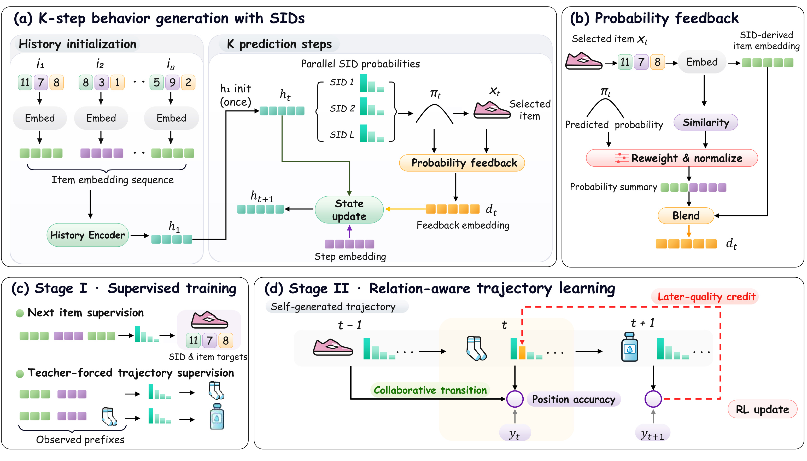
Figure 2(a)的历史编码只执行一次；之后状态每预测完整一个物品才更新一次，多个SID头共同产生同一行为的物品分布。Figure 2(b)展示两条反馈路径：选中物品的SID向量直接保留，候选分布经相似性重加权得到摘要，再按混合系数组合。它避免直接把相距很远的多个兴趣均值化，但没有证明同向量相似就一定意味着真实因果转移。下部(c)的监督阶段利用真实目标与真实前缀建立初始生成器；(d)的第二阶段才在自己抽样的轨迹上计算位置准确性、协同转移、后续信用和参考模型约束。图上的RL更新不能被读成线上用户奖励，奖励来自训练日志中观察未来与离线转移统计。训练第二阶段和最终推理都启用概率反馈，因此推理开销也包含软摘要计算，不能把它当作只在训练存在的辅助分支。
图中四个面板还揭示了一个实现条件：监督初始化的目标来自观察前缀，而第二阶段生成前缀来自当前策略，两者不能在数据输入上偷偷混用真实未来。参考模型只约束当前策略偏离，不提供新的真实未来信息。概率摘要的每次计算又依赖当前状态，所以重放时不能缓存一个与参数无关的旧摘要，否则后续损失回到早期分布的连续路径会被切断。模型保留同一生成闭环，只替换选中物品的规则，监督阶段取真实物品，关系学习阶段采样，部署预测阶段贪心。这种共享结构使模块消融更有可比性，却也意味着训练时启用的全库反馈在推理时不能免费省掉。若实现为了提速改成只反馈Top1，测试对象已经变为图中缺少软分支的另一个模型。
2.2 联合监督初始化
Stage I同时训练下一物品和完整轨迹。下一物品样本既监督SID各位置，也监督码组合后的物品概率；轨迹样本使用真实未来前缀，逐位置预测下一个真实目标。将原文公式(11)-(13)合并可写为：
符号解释：$i^+$为训练历史后的真实下一物品，$Y=(y_1,\ldots,y_K)$为真实未来，$K$为预测长度，两个$\lambda$分别权衡物品级监督和轨迹监督。轨迹中的$\pi_t$条件是真实$y_{<t}$，不是模型预测前缀。Stage I设$\eta=0$，反馈只用当前观察物品的SID向量，encoder、码embedding、SID头和状态转移头一起训练。多步监督要求状态能保留未来有用的信息，物品与SID双监督又使码级预测与合法目录目标保持连接。
进入Stage II时，把已学到的SID物品向量缓存为固定反馈表$b_i$，启用默认$\eta=0.75$，并复制生成器形成冻结参考$P_0$。因此第二阶段反馈表不随encoder参数继续漂移，当前生成器与参考模型都在同样的启用反馈配置下开始。需要区分“冻结反馈向量”和“切断反馈概率梯度”：前者仍允许候选权重依赖当前预测分布，后续状态仍可向早期概率传梯度，二者不是同一种消融。
2.3 关系奖励与后续信用
Stage II先从当前策略生成完整轨迹，真实未来不作为生成输入，只在生成后计算奖励。每个候选的奖励同时检查当前位置命中与相邻转移支持度。原文公式(14)-(15)、(17)为：
符号解释：$N_{ij}$统计训练序列中$j$紧接$i$的次数，$A$为有向条件频率，$\lambda_A$为转移奖励权重，首步$x_0$用历史最后物品，$m_t$为当前分布的精确期望奖励。未观察转移只得到零额外奖励，而非负奖励；热门高频转移仍可能影响偏好。候选奖励在给定前缀后可对全库计算，所以无需仅用抽到物品的单个奖励估计当前步期望。准确性项的期望等于$\pi_t(y_t)/K$，奖励在概率空间提升目标，与交叉熵的梯度形态不同。
选择当前物品还改变未来状态。若只优化$m_t$，离散选中哪件物品对之后结果的作用没有被完整覆盖。论文把未来各步的期望奖励作为较早选择的信用，原文公式(18)-(19)为：
符号解释：sg为停止梯度，$B$为同一训练样本其他独立轨迹的平均总期望奖励，$\pi_t^0$为冻结参考在同样抽样物品前缀下的分布，$\lambda_{\mathrm{KL}}$限制策略漂移。信用项只包含后续$s>t$，当前奖励已经在$m_t$全候选平均，不应再重复奖励。最后一步没有后续信用项，但仍经$m_K$学习。论文的无偏梯度论述要求固定奖励、鲜活on-policy抽样以及重放保留所有确定性参数依赖；它不是任意回放缓存都成立的保证。
实际每次更新独立抽样多条轨迹，再用相同参数重放这些离散物品序列并启用梯度，重新计算概率、反馈和状态。离散物品索引固定，但确定性反馈与状态计算不detach；参考模型沿同样物品序列计算自己的状态和概率，并非复用当前模型状态。SID分配、反馈表、转移统计与参考模型冻结，encoder、SID头和状态转移头联合更新。精确期望、离散选择的后续信用以及连续反馈梯度是三条不同路径，因此需要分别消融。
2.4 贪心推理和全物品库成本
推理时一次编码历史，每步选择$\arg\max_i\pi_t(i)$，其余候选仍通过软反馈进入状态；生成$K$个物品需$K$次行为步骤。原文公式(21)清楚保留了catalog相关项：
符号解释：$C_e(n)$为长度$n$历史的编码成本，$d$为隐藏宽度，$V$为每个码本大小，$N$为物品数。$NL$来自合法物品分数组合，$Nd$来自全库概率反馈；后者在非最后步执行。按固定SID配置看，推理随物品数和预测长度线性增长。每步buffer可复用，无需保存全部$K$个全库分布，但固定SID索引和反馈表依然存在。Stage II又增加多轨迹抽样、可微重放和完整冻结参考前向，不能只看最终模型参数量判断训练成本。面向百万级目录时，近似候选选择是否改变反馈和奖励期望，是本文明确留给后续工作的扩展问题。
3. 实验结果
3.1 数据与评价口径
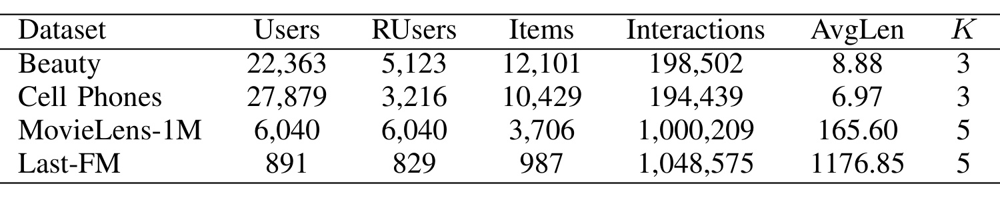
Table I同时给出原始Users和本地训练评测保留RUsers，不能把前者都当作测试分母。Beauty有22,363个用户、12,101个物品和198,502次交互，保留5,123人预测三步；Cell Phones有27,879个用户，保留3,216人、10,429个物品，亦预测三步。ML-1M的6,040个用户全部保留，物品3,706个，预测五步；Last-FM从891人保留829人，物品987个，平均历史长得多，也预测五步。最长历史虽可很长，模型默认只取50件历史物品，不能把Last-FM平均1176.85次交互解释为encoder每次都处理上千物品。数据集目录最大约一万物品，这与工业亿级目录有显著距离，是理解全库反馈可行性的重要前提。
每个用户按时间排序，最后$K$条作测试目标，其前$K$条作验证目标，训练窗口只从更早部分构建。测试历史包括验证目标之前及验证目标本身已经发生的交互，测试未来不进入历史。转移统计只来自训练部分。原文在不同预测长度下为所有本地方法对齐预处理序列、切分与窗口，并在完整合法目录评价，不抽样负例。但beam方法使用解码所得候选列表，非法映射丢弃，同位置重复物品合并，不足cutoff不补齐；这仍是影响方法对照解释的解码路径差异。
指标里$K$表示预测多少次未来交互，$M$表示每一未来位置的排名截断，二者不能混。设每步跨测试样本的命中率为$h_t$，单相关物品NDCG为$d_t$，原文公式(24)-(25)为：
符号解释：$r_{n,t}$是样本$n$第$t$步真实物品的一起始排名，$N_{\mathrm{test}}$为测试轨迹数，$h_t$平均命中指示，$d_t$平均命中后按$\log_2(r+1)$折损的分数。SHR是每步命中率的几何平均，不是单条轨迹全命中的比例；后者才是SeqMatch。SeqMatch@50要求每个对应位置真实物品均在该位置Top50中，不要求模型贪心的一条轨迹精确复刻所有目标。
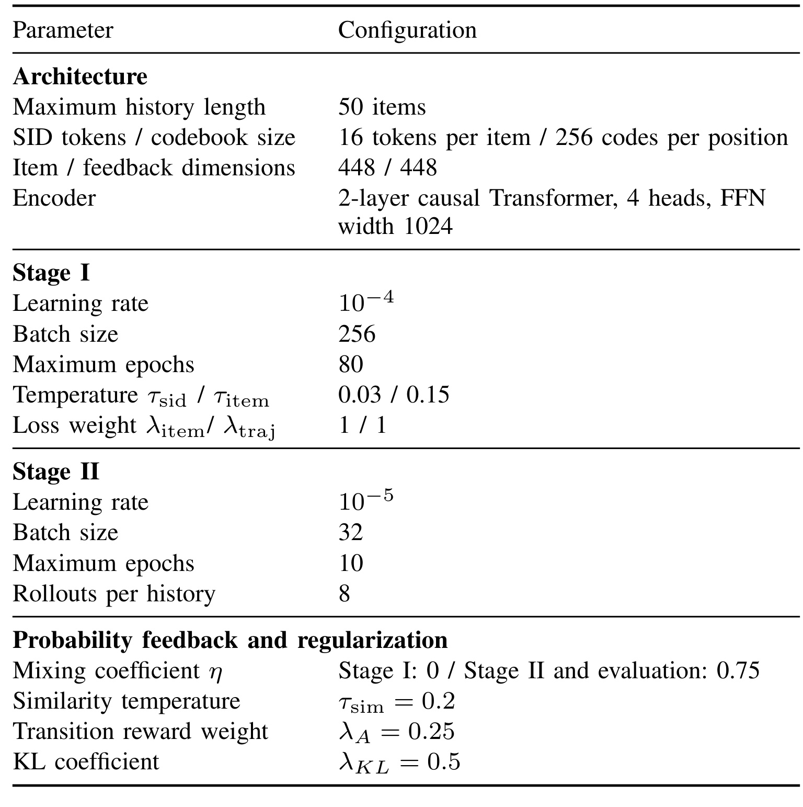
Table II约束了本文比较适用的实际预算：历史上限50，SID长16，每位置码本256，物品与反馈维448，encoder为两层、四头、FFN宽1024的因果Transformer。Stage I学习率为万分之一、batch256、最多80epoch；Stage II学习率十万分之一、batch32、最多10epoch，每历史抽样八条轨迹。反馈由第一阶段的零混合切为第二阶段及推理的0.75，相似温度0.2，转移奖励权重0.25，KL权重0.5。SID与物品温度分别0.03和0.15，两项监督权重均为1。表中八条rollout与参考前向意味着第二阶段每个样本的工作量明显高于一次普通监督更新，无法用“再训练10epoch”直接估算总成本；论文未给出完整训练墙钟和能耗对照。所有这些设置主要服务中小目录实验，迁移时应重新评估目录扩容和历史长度的预算。
本地方法报告三次训练均值，seed为42、123、2024，checkpoint按验证SNDCG@10选择。论文称主指标改善达到$p<0.05$，但主表未逐单元附完整置信区间、检验种类和多重比较校正，不能把所有36格都视为已独立证明显著。LPDO来自作者实现并用统一评价器重算；GCB没有公开实现，本文自行按论文描述实现。普通方法也采用不同的任务适配方式：一部分只从历史直接给未来位置评分，一部分贪心rollout，一部分beam生成；额外SASRec-M、RPG-M提供多步监督的更接近对照。
3.2 主结果与逐位置质量
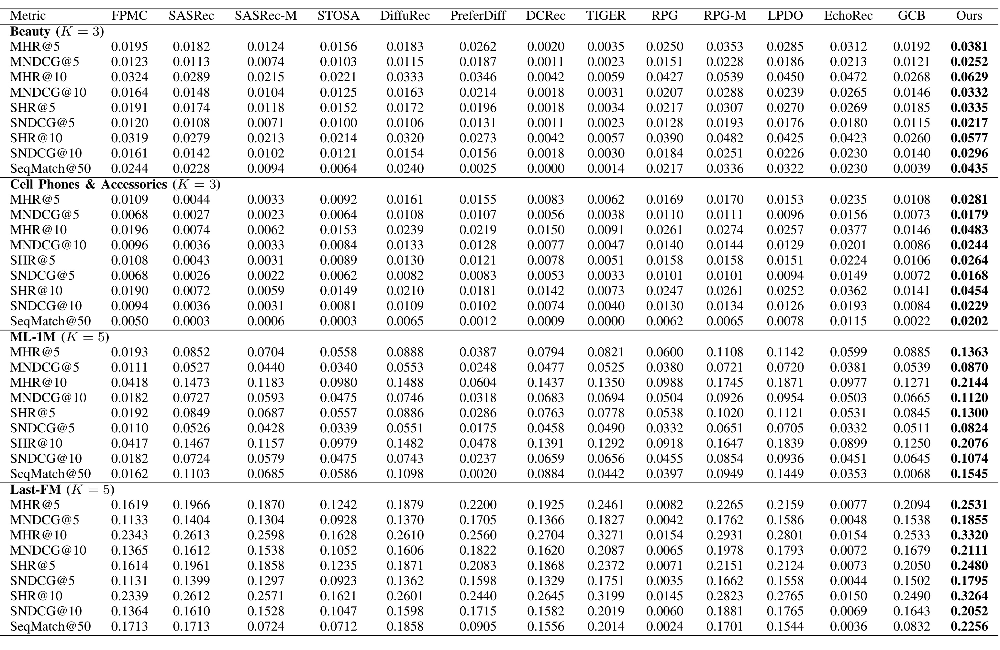
Table III比较13个baseline配置与TraGR，四数据集各有九个指标，总计36格。作者报告TraGR在这张主表全部最高，但幅度不能概括为统一的大提升：相对各数据集各指标的最强基线，MNDCG@10约提升1.15%至21.39%，SNDCG@10约提升1.63%至18.65%。Beauty的RPG-M已明显强于原RPG，提示多步监督本身贡献不可忽视；TraGR的MNDCG@10从最强基线0.0288到0.0332，SNDCG@10从0.0251到0.0296。这里都是比例得分，相对提升应以基线为分母，不是百分点。例如后者差0.0045，对应0.45个百分点，但相对约17.93%。表格没有在线CTR、GMV或停留时长，不能把这些排名分数转换成业务收益。
SeqMatch@50的相对最强基线改善分别约29.46%、75.65%、6.63%和12.02%，顺序为Beauty、Cell Phones、ML-1M、Last-FM。Beauty从0.0336到0.0435的增幅看似较大，但绝对全位置候选覆盖仍只有4.35%的测试轨迹，因此准确的表达是改善联合覆盖，不能写成大多数未来轨迹都被预测正确。Last-FM的TraGR为0.2256，最强基线为0.2014；对应绝对2.42个百分点。不同目录大小、历史密度和预测长度影响任务难度，跨数据集直接比较该比例也没有简单意义。主表支持在统一离线协议下组合机制的有效性，但各baseline适配与SID构造不同，单凭主表无法把收益全部归因给某一反馈或奖励部件。
还应留意表中普通推荐器与多步版本的差异：多步版本不仅改变推理反馈，也接受各未来位置监督，它们往往构成更强的竞争者。本文用它们反驳了只靠多目标标签就能解释全部收益的简单说法，但也表明单步训练与轨迹任务存在结构性不匹配。另一个实际约束是beam候选数量：完整目录评分与从有效beam解码去重后形成的候选列表，在评估同一合法目录时仍可能有不同的可达集合；没有命中的目标不再追加搜索或补齐。因此主表应读作论文所规定推理管线的整体对照，不宜当成所有方法在无限搜索预算下的表示能力比较。
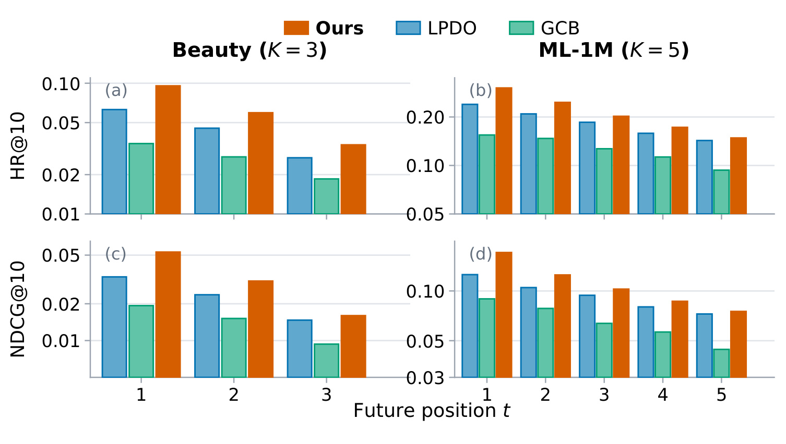
Figure 3用HR@10和NDCG@10展开Beauty三步与ML-1M五步，而非仅展示均值。橙色TraGR在两数据集的每个未来位置都高于所选LPDO和GCB对照；横轴越往后，各方法普遍下降，这与未来不确定性增大和生成前缀误差积累一致。图中表现说明总体优势不是只靠第一步的巨大提升掩盖后面崩溃，但它也没有单独识别误差积累来自哪部分，因为同一方法同时改变表示、反馈和训练。ML-1M第一步HR明显高于最后一步，提醒读者即使模型在几何均值指标上领先，长距离预测仍然困难。两种数据集的纵轴尺度不同，不能按柱子视觉高度比较跨数据集难易。图也只展示两个代表数据集和两个轨迹方法，不应扩展成所有baseline每个位置都已逐项核验。
此外，每个位置的柱值是该位置在整个测试人群上的平均，不表示一名用户在同一条预测轨迹上的连续成功。某一方法可能在不同位置命中不同用户，因此即使逐位置指标都提高，仍需另看SeqMatch判断联合覆盖。原文同时报告两种统计，正是为了减少这种均值误读。
3.3 状态递推和反馈消融
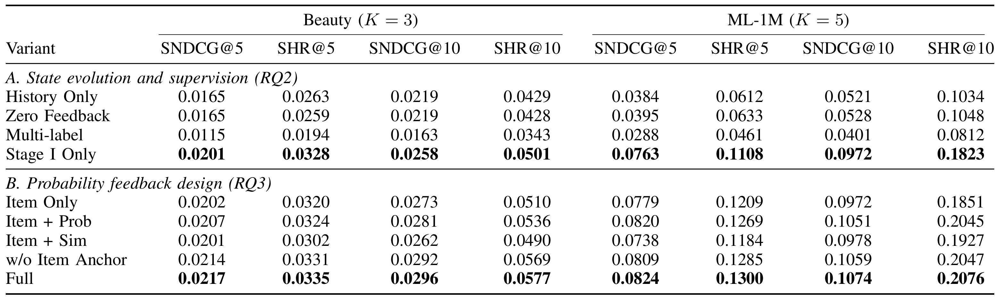
Table IV的A面板在Stage I内比较状态和监督，避免把第二阶段收益混入。History Only为每个未来位置使用相同历史表示加位置embedding，Zero Feedback保留循环状态却不给物品反馈，Multi-label在不递推结构上把有序目标改为未来物品集合BCE。Stage I Only在Beauty的SNDCG@10为0.0258，而History Only为0.0219；ML-1M分别为0.0972和0.0521，支持有物品输入的状态转移与有序监督。Zero Feedback与History Only相近，说明仅增加循环计算并未获得完整收益。Multi-label最弱符合任务需预测时间位置的设定，但同时改变损失，因此不能据此证明所有无序表示必然无用。
B面板围绕完整Stage II配置替换反馈规则。Item Only只传选中向量；Item+Prob加入原始概率摘要；Item+Sim只靠相似性权重；w/o Item Anchor仅用软摘要。Full同时结合概率、相似性和显式锚点，在两数据集全部所列指标最高。Beauty SNDCG@10从Item Only的0.0273到0.0296，ML-1M从0.0972到0.1074。只保留相似性在Beauty部分分数甚至低于Item Only，因此“有更多软信息就一定更好”不是表中结论；概率反映当前上下文，锚点避免摘要过度漂移，二者需共同读取。完整反馈与缺锚点的差距较小，提示其独立增益需要结合三seed方差判断，不能把全量改善都分配给锚点。
这个消融还隔离了反馈的内容与递推的存在：保留递推却输入零向量只能检验状态网络能否独自演化，并没有检验预测物品语义的价值；纯相似性摘要则去掉了当前概率对用户历史的条件化。两类替换的失败方式不同，所以不能把所有低于Full的行都统称为“缺少记忆”。从训练到部署，最直接应核查的是反馈向量在同一步是否由当前预测分布产生，以及是否与当前选中物品一致。如果混用了旧分布、旧反馈表或不同SID映射，形式上仍有递推，实际上已偏离这里被检验的信息路径。
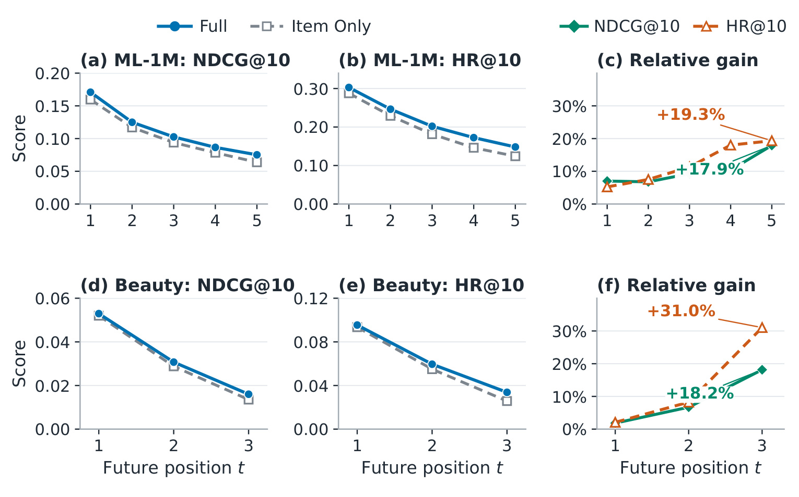
Figure 4把Full与Item Only按未来位置展开，左两列分别是NDCG@10和HR@10，最右列是以Item Only为分母的相对改善。ML-1M第五步标注约19.3%的HR和17.9%的NDCG相对增幅；Beauty第三步约31.0%与18.2%。这些数字不是最终绝对得分，也不是所有未来位置的平均改善。前两个面板显示两条曲线仍然随位置下降，概率反馈是在较低质量的后续位置减少损失，并未消除预测难度。右列某些相对增幅上升还受baseline后续分数下降影响，所以应同时看绝对曲线。图比较的是完整训练后的反馈变体，能支持所评估配置下完整机制有价值；不能从曲线直接断定“预测不确定性被校准”或“对真实未来的置信度更准确”，因为没有可靠性图、ECE等概率校准检验。它证明的是排序预测受益，而不是分布校准已完成。
相对增幅的终点标注也不能替代整个曲线：第一步两种方法几乎共享相同历史输入，后续位置才更多依赖反馈路径。如果从第一步到第五步提升扩大，这与反馈作用逐步积累相符；但它不是单变量因果证明，仍需要Table IV里同架构控制和Table V里反馈梯度控制共同支持。
3.4 关系学习与梯度路径
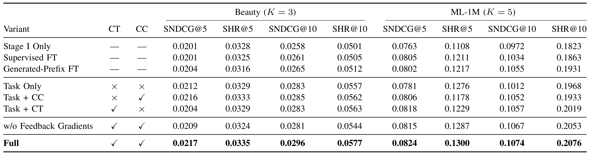
Table V用三种额外控制区分“多训练一段”与本文关系学习。Supervised FT继续真实前缀监督，Generated-Prefix FT用自己生成前缀继续监督，Task Only只保留期望位置准确性奖励。Full在Beauty的SNDCG@10为0.0296，对比Stage I Only的0.0258、Supervised FT的0.0261和Generated-Prefix FT的0.0265；ML-1M则为0.1074，对比0.0972、0.1034和0.1055。这说明只增加监督步数或改为生成前缀能解释部分增益，却未解释全部。Task Only已经达到Beauty0.0283和ML-1M0.1012，期望奖励优化本身也占有贡献，不能把全部提升都归于协同转移。
单独加入CT或CC并非每个数据集和指标都单调增加，例如ML-1M的Task+CC SHR@5为0.1178，低于Task Only的0.1276；Full为0.1300。因而正确观察是从完整配置移除任一项都会降低所列结果，而不是“CT、CC独立对每项指标均有正收益”。停止反馈概率梯度仍保留CT、CC和正向反馈，但Beauty SNDCG@10降到0.0281、ML-1M降到0.1067，支持后续损失经连续反馈回传的附加作用。两数据集差距幅度不同，且未附每个消融的置信区间，因此不宜给三条路径排出确定的普遍贡献顺序。表格最有价值的是提供受控机制证据，使读者看到收益同时依赖目标和梯度链路，而不仅是增加几个奖励名字。
信用项使用其他轨迹作为基线，目的在于减少随机抽样带来的估计方差；它并没有增加外部标注或真实用户反馈。表中Generated-Prefix FT尤其重要，因为它已让模型见到自己的错误前缀，若Full只比Stage I好而不比这个控制好，就难以说明关系奖励的必要性。当前结果确实保留差距，但ML-1M的幅度远小于Beauty，说明与数据密度、候选结构和预测长度共同相关。w/o Feedback Gradients仍有正向概率摘要，因此这一行的损失不应归为推理阶段缺少信息，它测量的是训练期间较早概率能否从较晚分布接受连续梯度。
3.5 超参数与预测长度
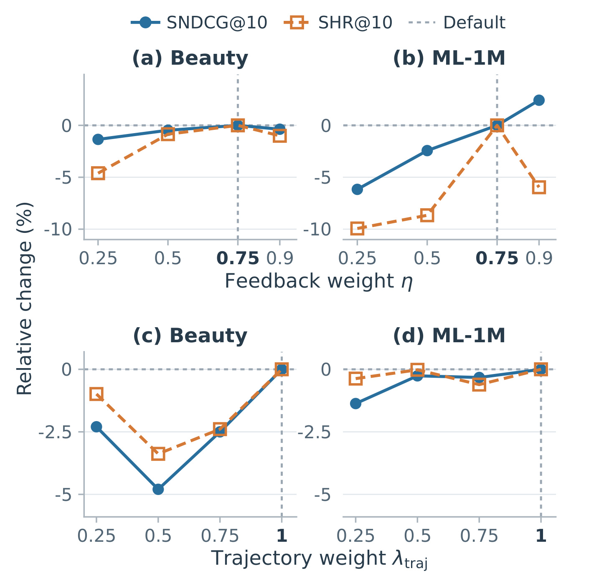
Figure 5纵轴是相对默认设置的百分比变化，灰虚线标出默认值和零变化；它不是不同指标的原始值比较。反馈权重从0.25增到0.75时两个数据集总体改善，但ML-1M在0.90出现SNDCG继续提高而SHR下降的取舍，说明更强软摘要可能改善排序位置同时损伤命中覆盖。默认0.75因此只是本文验证范围里的折中，不是理论最优。下排改变第一阶段轨迹损失权重，默认1.0整体最好，Beauty在中间权重反而跌得更多，曲线并不单调；ML-1M SHR对某些权重接近不变，不能据此宣传参数完全不敏感。图中参数只在两个数据集、有限网格测试，不能外推到不同历史长度、更多未来步或工业目录。工程迁移应先冻结其他预算，再观察位置质量和联合覆盖是否同时改善，避免只以单一几何均值挑选混合系数。
对混合参数而言，保持选中物品锚点的比例与扩大软分布比例存在内在拉扯：过低可能丢掉替代候选，过高可能把状态过度拉向平均兴趣。图中的非单调现象为这种取舍提供经验线索，但作者未给出不同种子的曲线区间，不能将细小交叉解释成稳定规律。
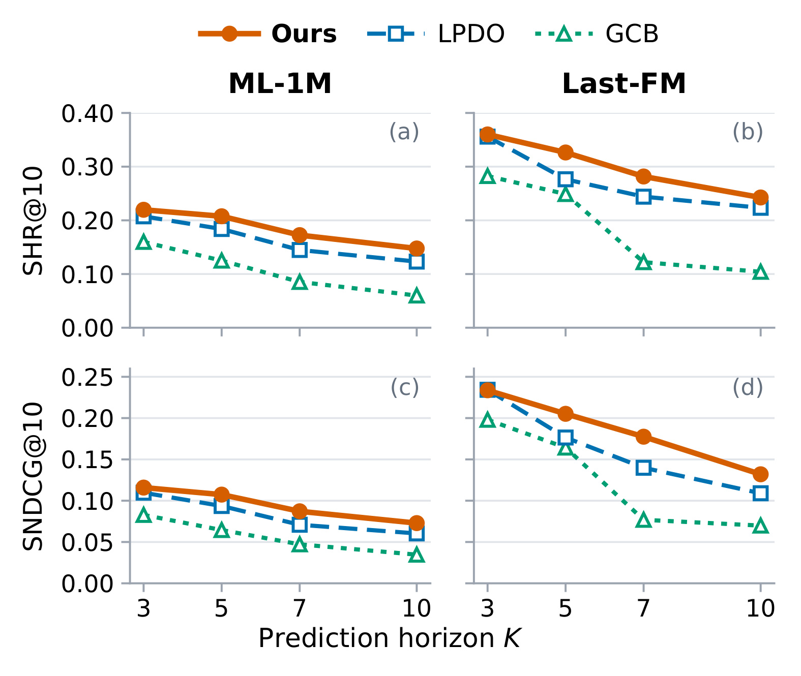
Figure 6在ML-1M与Last-FM评估$K=3,5,7,10$，每个长度都重新训练各方法，并用该长度对应的相同样本与候选集比较。于是曲线不能解释为同一个checkpoint从三步无损外推到十步；它比较的是分别针对不同任务长度训练的模型。ML-1M上TraGR在所有长度的SHR和SNDCG都最高，Last-FM上SHR始终最高，而$K=3$的SNDCG由LPDO略高；到了$K\ge5$才两项均领先。这个小例外不影响较长目标上的优势，却限制“所有预测长度所有指标最好”的概括。三种方法随着$K$增加都明显下降，TraGR从三步到十步相对下降较小，仍不能称为解决长期行为预测。由于长度变化也改变可用窗口与人群，跨横轴的绝对变化同时包含任务难度与数据分母变化；在每一$K$内的同窗对比更可靠。
并且每条曲线的末端并没有达到零，也没有出现不随长度变化的平台，因此它支持相对鲁棒性而非无限滚动能力。若用于推荐系统中的中长期兴趣观察，应把目标长度固定后做同分母比较，再决定是否需要不同长度分别训练；不能直接把较长曲线点当成现有短模型可提供的额外免费输出。
3.6 推理成本与适用边界
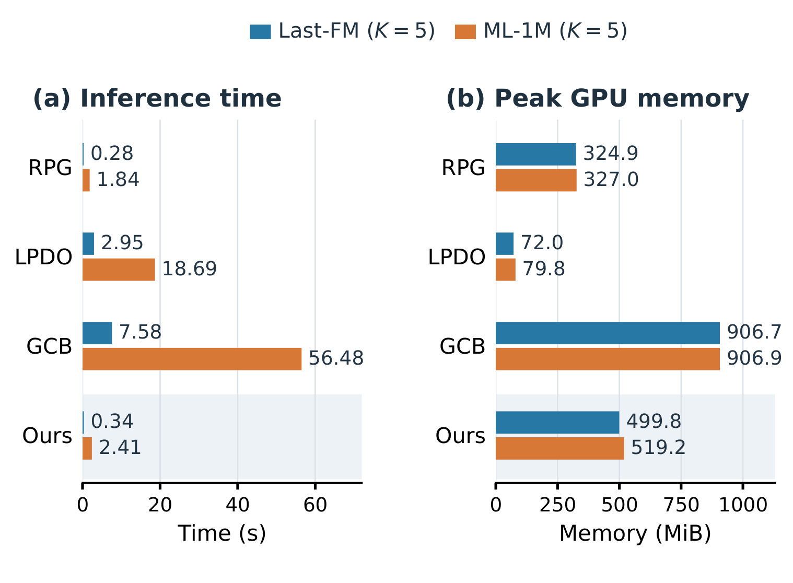
Figure 7来自单张H200、batch64，在三次warmup后运行五次计时取均值，计时区间包括前向和轨迹生成，GPU前后同步。Last-FM上TraGR为0.34秒，LPDO2.95秒、GCB7.58秒、RPG0.28秒；ML-1M上分别2.41、18.69、56.48、1.84秒。这是各数据集完整测试工作量的总时间，不是单请求延迟，更不是线上P99。RPG与TraGR用贪心，LPDO一步去噪，GCB beam100，因此约23.44倍的ML-1M对GCB时间比，包含架构与解码预算差异，不能说是孤立SID并行带来的相同质量加速。
显存也有明确取舍：TraGR在Last-FM和ML-1M为499.8、519.2MiB，低于GCB的906.7、906.9MiB，但高于LPDO的72.0、79.8MiB和RPG的324.9、327.0MiB。对LPDO更快却更占内存，对RPG既慢又占更多内存，是有质量提升的额外开销。图没有生产服务的并发、候选构建、网络、输入特征、超时或吞吐SLO，所以不能由其总测试时间推算可上线QPS。目录才987或3706件，固定反馈表与全库softmax的规模优势尚未接受百万目录检验。完整训练包含八rollout、重放与参考生成器，图中的推理显存也不代表训练峰值。
时间图还必须按数据集分别读：Last-FM与ML-1M的用户数、目录大小和测试工作量都不同，两个橙蓝条的差异不是在相同请求集上扩大目录的受控扩容实验。虽然两者都预测五步，也不能把总秒数之比当作纯物品数的缩放规律。显存图记录的是峰值，而不是静态参数文件或平均占用，固定反馈表、临时分布和框架分配均可能参与。若只依据模型参数估算显存会漏掉这些候选相关buffer。对工业落地而言，首要缺口并不是图上缺一个更大的倍数，而是需要在目标目录、相同质量约束和实际并发下，分别测量状态更新、目录组合和软反馈的时间与内存，再看是否仍满足服务目标。
4. 总结
4.1 我对证据的判断
TraGR最值得保留的是行为状态这个中间层：同一物品内部的SID并行完成，未来物品之间才发生状态转移；选中物品与剩余概率信息共同塑造下一状态。这让结构、训练奖励与任务位置对齐。论文没有仅把未来多件物品拼成更长token文本，而是给每次未来交互一个明确状态和后续信用，因而能设计对应消融。主表全36格领先与状态、反馈、关系学习控制实验相互支撑，证据比单独展示一个最终均值充分。
同时，软反馈并没有免费保留不确定性。它需要全库概率、相似性重加权和固定反馈向量表，在大目录下会把开销从串行token解码转向目录相关计算。本文的量级允许直接求期望，工业应用常需要候选截断；一旦截断，既改变候选摘要，也改变当前奖励期望与KL分母。我的判断是先验证近似误差再谈吞吐：抽取固定评测历史，比较全库与候选版本的分布、摘要向量和逐位置指标，观察误差是否随预测步放大。这是迁移实验建议，不是论文已经完成的系统验证。
4.2 局限与下一步阅读
第一，轨迹目标来自日志行为，受原曝光与用户选择混合影响；没有反事实奖励和线上随机实验，不能用离线联合覆盖宣称长期业务收益。第二，转移奖励来自训练相邻频率，冷门或新物品可能没有转移支持，流行行为也可能被进一步放大，需按热度与冷启动分组检查。第三，目录规模小，计算复杂度仍线性依赖物品数量，固定反馈表在动态新增物品、重编码或更新内容语义后如何维护尚未展开。第四，主表有三seed均值和概括性显著声明，但缺少逐项区间及完整训练成本，对小幅增益与生产投入的判断仍有限。第五，GCB是本文复现且用beam100，不是对全部实现和预算进行系统调参后的绝对性能边界。第六，Last-FM最短长度的SNDCG例外、反馈强度的指标取舍、单独信用项的负向单元，都提示机制收益依赖任务配置。
对于大模型的迁移，我更看重“离散决定加连续备选摘要”这条接口，而不是直接复用商品奖励。工具调用Agent也会在多个行动之间选一个执行，若只把最终选择写回状态，其他高支持行动的证据可能丢失；但工具环境通常无法枚举全体行动并精确评价奖励，而且执行会真实改变环境。因此本文的全库期望与固定日志未来不能原样迁移，应先找可枚举的小行动空间，保持同任务、同预算和相同环境结果核验。
后续应首先阅读RPG的OPQ与并行SID实现，确认TraGR究竟沿用了哪些编码和打分性质，避免把基础设计重新计为新增贡献。其次应对照GCB与LPDO的未来位置评测代码，重点核查beam非法映射、去重、几何均值与SeqMatch分母，确保相同名称的指标真正一致。第三，应检查作者仓库的SID产物来源及数据切分：已有packaged SID与本机重新拟合可能不同，evaluate-only读取存量指标也不意味着完成一次新评测。第四，若尝试移植概率反馈，可先在现有完整目录上关闭CT或CC作有限的配对消融，同时记录训练墙钟、每步全库分布开销和多步质量，以区分奖励价值与额外计算。本文为技术精读，不代表已验证任何线上发布条件。